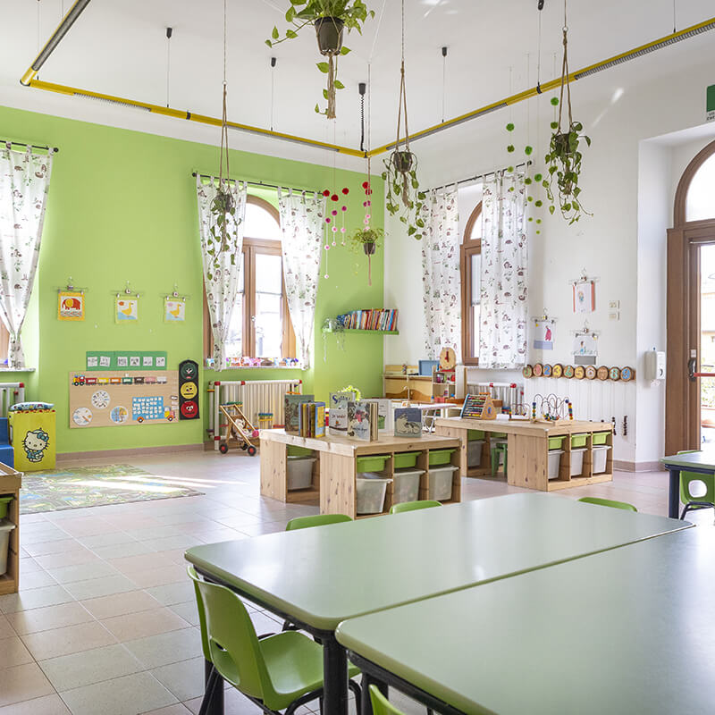

Stage Scuola Materna
Alzano Lombardo (BG), Italia
Periodo
Giugno 2024
Ore Totali
40 Ore
Panoramica dell'Esperienza
Nel mese di giugno 2024 ho svolto un tirocinio formativo di 40 ore presso la Scuola Materna di Alzano Lombardo. Questa esperienza mi ha permesso di allontanarmi temporaneamente dai contesti prettamente informatici per immergermi in un ambiente organizzativo e sociale incentrato sulle relazioni umane, sulle dinamiche di gruppo e sulla gestione di flussi lavorativi quotidiani complessi ed estremamente dinamici.
Affiancando il personale educativo, ho compreso l'importanza della pianificazione strategica dietro ogni singola attività didattica e ricreativa. Lavorare con i bambini richiede elevati livelli di attenzione, empatia e una costante prontezza operativa nel rispondere agli imprevisti logistici o relazionali.
Diario di Bordo
Fase Iniziale: Inserimento e Osservazione
I primi giorni sono stati dedicati alla comprensione delle routine della struttura, all'analisi dei flussi orari e all'osservazione dei metodi di comunicazione interpersonale utilizzati dalle educatrici per mantenere alta l'attenzione e garantire la sicurezza del gruppo classe.
Fase Centrale: Supporto Operativo e Gestione delle Attività
Sono passata a un ruolo attivo, collaborando all'organizzazione pratica dei laboratori ludico-espressivi. Ho gestito autonomamente piccoli gruppi durante le transizioni quotidiane (il momento del pranzo, il riordino e i giochi all'aperto), applicando strategie tempestive per risolvere i piccoli conflitti o i cali di coinvolgimento.
Fase Finale: Autonomia e Bilancio del Lavoro
Nell'ultima fase ho supportato la preparazione delle attività di chiusura dell'anno e l'archiviazione logistica dei materiali didattici, consolidando dinamiche di teamwork fluido con l'intero organico della scuola.
Competenze Sviluppate e Valore del Percorso
Anche se apparentemente distante dal mio percorso di studi in informatica, questa esperienza si è rivelata di fondamentale importanza per la mia crescita professionale e personale, agendo da catalizzatore per lo sviluppo delle mie Soft Skills:
- Problem Solving Autonomo: Ho imparato a prendere decisioni rapide ed efficaci in situazioni imprevedibili o caotiche, mantenendo la calma e la lucidità organizzativa.
- Organizzazione e Gestione dei Flussi: Coordinare le tempistiche e gli spazi di un gruppo numeroso mi ha insegnato l'importanza della pianificazione logistica rigorosa.
- Comunicazione Interpersonale ed Empatia: Adattare il linguaggio a interlocutori con necessità diverse ha affinato le mie capacità d'ascolto, d'interazione e di mediazione dei conflitti.
